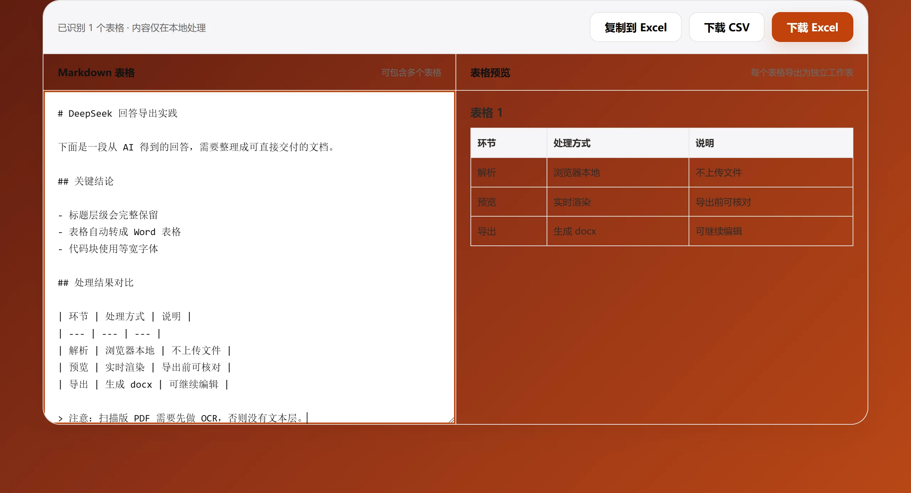

Markdown表格
Markdown表格怎么转到Excel
AI经常用Markdown表格返回比较结果。转入Excel前应先确认列边界，避免竖线、单元格换行和数字格式导致错列或数据变化。

推荐方法
- 确认表格包含一行表头和一行分隔符。
- 将Markdown预览成HTML，检查每列是否对应正确。
- 复制渲染后的表格到Excel，并复核日期、金额和编号。
常见问题
- 单元格中的竖线可能被误认为新的一列。
- 单元格内换行可能在Excel中变成多行。
- 手机号、编号等前导零可能被Excel自动删除。
需要反向转换？
如果你已经有Excel或CSV文件并希望生成Markdown表格，可以使用Aixuno Excel转Markdown工具，选择工作表后预览结果。
几个表格会生成几个工作表
Markdown 里有几张表，就生成几个工作表，按出现顺序编号。源文件里两张表，导出的 Excel 里就是两个工作表，不会堆在同一张表里。
对齐行决定了什么
表头下面那行短横线决定列的对齐方式，并且会带到 Excel 里：
| Markdown 写法 | 含义 | 在 Excel 里的效果 |
|---|---|---|
:--- | 左对齐 | 文字靠左 |
:---: | 居中 | 内容居中 |
---: | 右对齐 | 适合数值列 |
需要提前知道的限制
- Markdown 没有跨行、跨列的语法，合并表头必须在 Excel 里重新做。
- 转义的竖线
\|会留在一个单元格里，没转义的竖线会把单元格切开。 - 数字默认按文本写入，要参与计算前先确认列类型是数值。
关于 Excel 输出的问题
多个表格会怎么处理？
每张表单独生成一个工作表，按在原文里出现的顺序编号。
合并单元格能保留吗？
不能。Markdown 没有跨行跨列语法，合并在 Excel 里重新做。
数字会保持数值格式吗？
数值按单元格内容写入。做公式前先确认列类型，文本格式的数字不会参与计算。